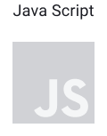
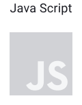
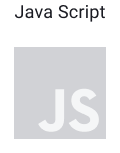

Используемые технологии
 


Этот сайт — дипломный проект студента Яндекс.Практикума. Его цель — показать, чему научился студент, какими технологиями владеет.
Вёрстка сайта выполнена по методологии БЭМ. Это делает сайт гибким и масштабируемым. Кроме того, добавлять новые страницы и функциональность проще и быстрее, чем в проектах, выполненных по другим методологиям. Также сайт проще и дешевле поддерживать.
Карточки с новостями приходят с сервера и обрабатываются асинхронно. То есть сайт продолжает работать, пока от сервера приходит ответ. Это повышает удобство использования сервиса.
При создании проекта была использована сборка технологией Webpack. Это современный подход к разработке сайтов. Код оптимизируется, а значит, сайт работает быстрее. Также сайт работает в старых браузерах. Даже если посетители — пользователи старых операционных систем, у них не будет проблем с отображением. А значит, потенциальная аудитория возрастает.
Проект был проверен экспертами Яндекс.Практикума. Если вашему бизнесу нужен сайт, мы рекомендуем обратиться к этому студенту.
